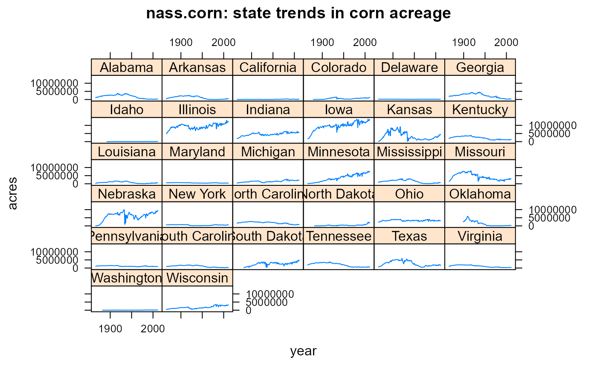

nass.corn.RdYields and acres harvested in each state for the major agricultural crops in the United States, from approximately 1900 to 2011. Crops include: barley, corn, cotton, hay, rice, sorghum, soybeans, wheat.
nass.barley nass.corn nass.cotton nass.hay nass.sorghum nass.wheat nass.rice nass.soybean
yearyear
statestate factor
acresacres harvested
yieldaverage yield
Be cautious with yield values for states with small acres harvested.
Yields are in bushels/acre, except: cotton pounds/acre, hay tons/acre, rice pounds/acre.
Each crop is in a separate dataset: nass.barley, nass.corn, nass.cotton, nass.hay, nass.sorghum, nass.wheat, nass.rice, nass.soybean.
United States Department of Agriculture, National Agricultural Statistics Service. https://quickstats.nass.usda.gov/
library(agridat) data(nass.corn) dat <- nass.corn # Use only states that grew at least 100K acres of corn in 2011 keep <- droplevels(subset(dat, year == 2011 & acres > 100000))$state dat <- droplevels(subset(dat, is.element(state, keep))) # Acres of corn grown each year libs(lattice) xyplot(acres ~ year|state, dat, type='l', as.table=TRUE, main="nass.corn: state trends in corn acreage")## Plain levelplot, using only states ## libs(reshape2) ## datm <- acast(dat, year~state, value.var='yield') ## redblue <- colorRampPalette(c("firebrick", "lightgray", "#375997")) ## levelplot(datm, aspect=.7, col.regions=redblue, ## main="nass.corn", ## scales=list(x=list(rot=90, cex=.7))) # Model the rate of genetic gain in Illinois as a piecewise regression # Breakpoints define periods of open-pollinated varieties, double-cross, # single-cross, and transgenic hybrids. dil <- subset(nass.corn, state=="Illinois" & year >= 1900) m1 <- lm(yield ~ pmin(year,1932) + pmax(1932, pmin(year, 1959)) + pmax(1959, pmin(year, 1995)) + pmax(1995, year), dil) signif(coef(m1)[-1],3) # Rate of gain for each segment#> pmin(year, 1932) pmax(1932, pmin(year, 1959)) #> -0.19 1.48 #> pmax(1959, pmin(year, 1995)) pmax(1995, year) #> 1.75 2.30